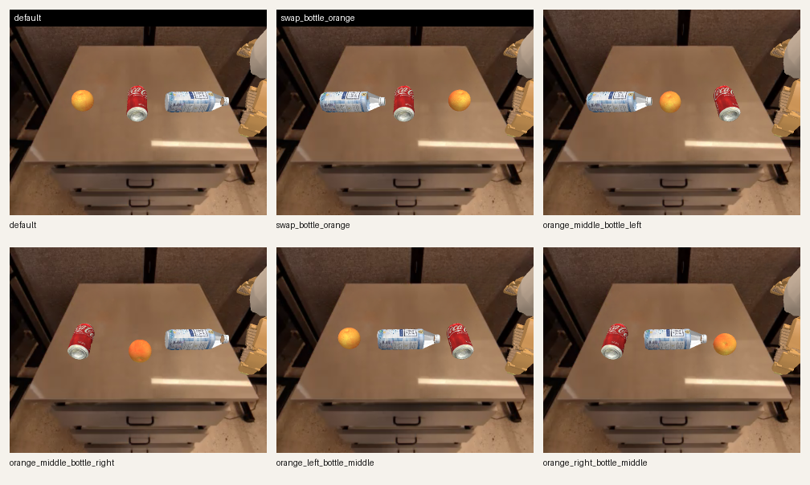
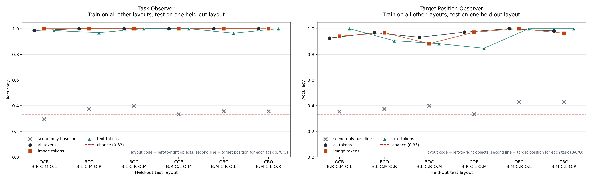
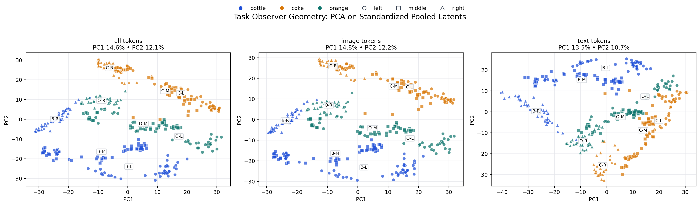
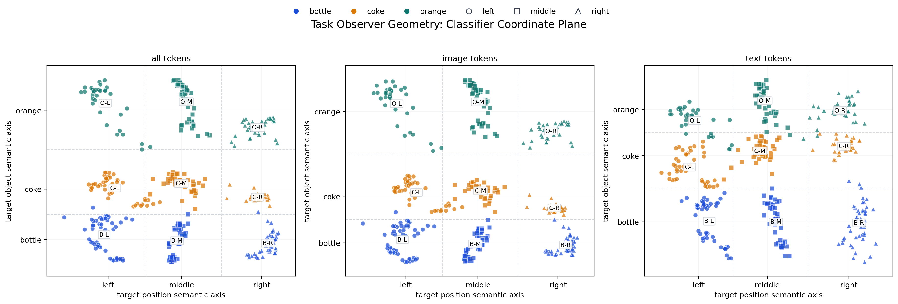

We evaluate whether the frozen System 2→System 1 boundary of
nvidia/GR00T-N1.6-fractal linearly separates
target object and target position on a
controlled tabletop suite. The suite spans 6 clean object-layout
permutations and 3 target objects
(bottle, coke, orange), with the final dataset containing
18 successful sequences and 376 sampled latent points.
The main result is positive for both labels. Under leave-one-layout-out
evaluation, task decoding is nearly perfect:
0.998 / 1.000 / 0.986 for pooled all / image / text token
slices. Target-position decoding is also strong:
0.964 / 0.955 / 0.939. This corrects the earlier
interpretation from the partial left/right-only study:
once the clean permutation table is complete, the boundary carries a
strong object/task code as well as a strong position code.
Six clean permutations of bottle / coke / orange were used. Existing bottle
and orange runs were reused; only the missing pick_coke target
had to be collected.

| Layout code | Left / Middle / Right | `pick_bottle` | `pick_coke` | `pick_orange` |
|---|---|---|---|---|
OCB | orange / coke / bottle | right | middle | left |
BCO | bottle / coke / orange | left | middle | right |
BOC | bottle / orange / coke | left | right | middle |
COB | coke / orange / bottle | right | left | middle |
OBC | orange / bottle / coke | middle | right | left |
CBO | coke / bottle / orange | middle | left | right |
Both classifiers use the same frozen latent dataset. Only the target label changes.
| Model state | GR00T is frozen; no policy fine-tuning during probing |
| Input to the probe | One pooled S2→S1 boundary feature vector from one sampled rollout timestep |
| Dataset | 18 successful sequences, 376 sampled latent points |
| Labels | task ∈ {bottle, coke, orange} or target_position ∈ {left, middle, right} |
| Probe | Single linear layer trained with class-balanced cross-entropy |
| Optimizer | AdamW, 300 epochs, learning rate 0.05, weight decay 1e-4 |
| Feature variants | pooled_all, pooled_image, pooled_text |
Here W ∈ R^(K×d) and b ∈ R^K are the learned
parameters, K = 3 classes, and α_y is the
class weight used in the cross-entropy loss.
The main metric is leave-one-layout-out accuracy.
OCB is the held-out layout, the probe trains on
BCO, BOC, COB, OBC, and
CBO, and is tested only on OCB. This is
stricter than a random train/test split because the classifier must
generalize to a full object-layout permutation it never saw during
training.
| Held-out layout | pick_bottle |
pick_coke |
pick_orange |
|---|---|---|---|
OCB | 6 successful episodes | 6 successful episodes | 5 successful episodes |
BCO | 6 successful episodes | 4 successful episodes | 6 successful episodes |
BOC | 6 successful episodes | 3 successful episodes | 6 successful episodes |
COB | 6 successful episodes | 6 successful episodes | 6 successful episodes |
OBC | 6 successful episodes | 5 successful episodes | 3 successful episodes |
CBO | 6 successful episodes | 5 successful episodes | 3 successful episodes |
pick_bottle, pick_coke, and
pick_orange. What varies by layout is only how many
successful episodes are available for each prompt.
Leave-one-layout-out mean accuracy across the 6 held-out layouts. The same table already contains the image-token and text-token slice comparison.
| Target | All tokens | Image token slice | Text token slice |
|---|---|---|---|
task |
0.998 | 1.000 | 0.986 |
target_position |
0.964 | 0.955 | 0.939 |

Two complementary 2D views of the same pooled latent representations.
PCA of pooled latents. This is an unsupervised 2D view: each point starts as a pooled latent vector and is projected down with PCA.

Classifier Coordinate Plane. Here the axes are semantic: the x-axis is defined by the target-position classifier and the y-axis by the target-object classifier.

| Simulation | SimplerEnv custom 3-object pick layouts |
| Robot | Google Robot (OXE_GOOGLE) |
| Model | nvidia/GR00T-N1.6-fractal |
| Probe | linear classifier on frozen boundary latents |
| Instance | g5.2xlarge |
| GPU | NVIDIA A10G (23 GB) |
| RAM | 30 GB |
| OS | Ubuntu 24.04.4 LTS |